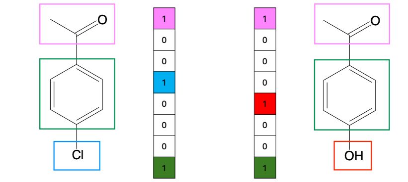
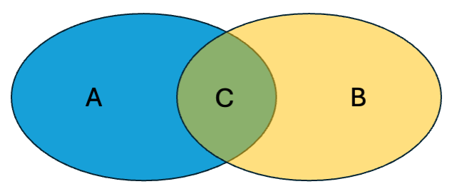

Molecular descriptors and similarity#
Molecular descriptors#
Molecular descriptors provide a way of encoding information about the structure or properties of a molecule in a primarily numerical form.
Roberto Todeschini and Viviana Consonni who literally wrote several books on molecular descriptors (including this one [1] which you can access through UoL library) defined molecular descriptors as follows:
“The molecular descriptor is the final result of a logic and mathematical procedure which transforms chemical information encoded within a symbolic representation of a molecule into a useful number, or the result of some standardized experiment.”[2]
Calculating descriptors#
Molecular descriptors are usually calculated based on a molecular representation [3], like a SMILES string or a molecular graph.
You have worked with some notation systems to represent molecules, such as SMILES and InChI. The distinction between a molecular representation and some types of molecular descriptors that encode structural information like molecular fingerprints can seem unclear. The table below summarises the information and how it is expressed and used for different types of molecular representations and descriptors.
Feature |
String-Based |
Molecular Graph (Representation) |
Molecular Fingerprint (Descriptor) |
Property Descriptor |
|---|---|---|---|---|
Definition |
Linear or hierarchical text notation of molecular structure |
Graph-based connectivity model |
Encoded numerical feature set |
Numerical value representing physical, chemical or biological property |
Format |
Text string (ASCII) |
Nodes (atoms) and edges (bonds) |
Bit vector, integer array |
Scalar, vector, or matrix |
Examples |
SMILES ( |
Adjacency matrix, edge list |
MACCS keys, ECFP, Morgan FP |
LogP, dipole moment, polar surface area (PSA) |
Typical use |
Database searching, input for descriptor calculations or other structure-based methods |
Input for descriptor calculations |
Similarity searching, QSAR, clustering |
QSAR/QSPR, toxicity prediction, virtual screening |
Information Captured |
Atomic connectivity in text format |
Topological information, connectivity |
Substructural patterns, fragments |
Usually computed, but also experimental molecular properties |
Molecular descriptors classed by dimension#
Descriptors are often described in terms of their dimensionality, which depends on the level of information about the molecule required to generate the descriptor. For example, a 0D descriptor like molecular weight or the number of atoms present can be calculated just from the molecular formula; whereas a 1D property like the number of hydrogen bond donors required some information about the molecule’s connectivity.
Dimensionality |
What It Captures |
Examples |
|---|---|---|
0D (Constitutional Descriptors) |
Atomic composition only, no bonding info |
Molecular weight, atom counts (C, H, O, etc.), molecular formula |
1D (Global Properties) |
Molecular properties |
Number of rings, LogP, number of H-bond donors |
2D (Topological Descriptors) |
Connectivity, graph-based structure |
Wiener Index, Morgan fingerprint, number of rotatable bonds |
3D (Geometric & Electronic Descriptors) |
3D shape, spatial arrangement |
TPSA, dipole moment, molecular volume |
4D (Conformational Ensembles) |
Multiple conformations, flexible structures |
Molecular interaction fields, ensemble pharmacophores |
There are many many different descriptors available. The Todeschini and Consonni book Molecular Descriptors for Cheminformatics [1] is an encyclopedic reference on descriptors, primarily those relevant in medicinal chemistry or drug discovery-related areas.
One type of descriptor that finds broad use and has become extremely prevalent due to the rising application of AI and machine learning are molecular fingerprint. This is a very brief introduction to what they are and how they can be used for measuring the similarity of chemical compounds.
Molecular fingerprints#
A molecular fingerprint is a type of descriptor (rather than a representation).
It is a computed numerical encoding of a molecule’s structure, typically represented as a bit vector or hashed feature vector.
Unlike a molecular graph, which represent connectivity, fingerprints transform structural information into a numerical format for use in QSAR modeling, similarity searching, and machine learning.
Fingerprints are derived from molecular structure, making them descriptors rather than raw representations.
Types of Molecular Fingerprints (a non-exhaustive list)#
Structural (key-based) fingerprints
Encode presence or absence of substructures specified in a pre-defined library.
Example: MACCS keys.

Path-based fingerprints
Compress all (usually linear) paths in a molecule up to a specified length into a fixed-length bit vector using hashing.
Example: Daylight Fingerprints.
Circular (radial) fingerprints
Capture atomic environments iteratively (e.g., Extended Connectivity Fingerprint ECFP [4] - nice primer here).
Example: Morgan fingerprints - probably the most prevalent molecular fingerprint currently.
Pharmacophore-based fingerprints
Encode molecular features relevant to binding (e.g., hydrogen bond donors/acceptors, hydrophobicity) [5].
Example: PH4 fingerprints.
Some other resources to learn about fingerprints
There is an intro to some of the molecular fingerprints available in the RDKit in the RDKit book and docs.
This RDKit blog post details how to generate various types of fingerprint in the RDKit. The RDKit Getting Started guide also has info on fingerprints and similarity (see later section), and understanding what bits in the fingerprints mean with some visualisations.
Molecular Similarity#
One of the major uses of molecular fingerprints is to assess molecular similarity by comparing the bit vectors (or count vectors) of different molecules.
How does molecular similarity work with fingerprints?#
Generate fingerprints
Convert molecules into fingerprints (e.g., Morgan fingerprints (ECFP), MACCS keys).
Compute a similarity metric to compare fingerprints
The Tanimoto coefficient (also called Jaccard similarity) is the most common measure used in combination with fingerprints
Other similarity measure include Dice similarity, Cosine similarity, and Euclidean distance (see below)
Interpret similarity scores
Decide what values of score indicates if molecule is similar or different enough.
How similar is similar? [6] A Med Chem perspective [7]
How similar two compounds (or other chemical entities) can be a rather contentious question, but it is at the heart of many areas of discovery and design in chemical and molecular sciences, even in processes as seemingly simple as database searching. Quantitative measures based on encoded representations or fingerprints are therefore essential, but it can be challenging to distil “similarity” down to a single measure.
Similarity measures#
A variety of similarity measures are used in different applications and fields [8], and the choice of a particular measure might be dependent various factors, such as easy they are to compute, the information being compared and the type of similarity - or difference - they are assessing [7].
Many studies show that similarity coefficient can also show different sensitivities depending on the representation or fingerprint on which they were calculated and the combination of representation/fingerprint and similarity measure might be more or less appropriate in different contexts [9-13].

\(a\) = number of bits on in fingerprint \(A\) (i.e., \(|A|\))
\(b\) = number of bits on in fingerprint \(B\) (i.e., \(|B|\))
\(c\) = number of shared “on” bits between \(A\) and \(B\) (i.e., \(|A \cap B|\))
Similarity Measure |
Formula |
|---|---|
Tanimoto-Jaccard coefficent |
\(S_{AB} = \frac{c}{a + b - c}\) |
Dice coefficent |
\(S_{AB} = \frac{2c}{a + b}\) |
Cosine coefficent |
\(S_{AB} = \frac{c}{\sqrt{a b}}\) |
Euclidean distance |
\(D_{AB} = \sqrt{a + b - 2c}\) |
Hamming (Manhattan) distance |
\(D_{AB} = a + b - 2c\) |
Tversky coefficent |
\(S_{AB} = \frac{c}{\alpha (a - c) + \beta (b - c) + c}\) |
\(S_{AB}\) are similarity metrics; \(D_{AB}\) are distance or dissimilarity measures.
Example applications#
Virtual Screening: Find drug-like molecules similar to known active compounds.
Clustering: Group similar molecules in chemical databases.
QSAR Modeling: Identify structurally similar molecules with similar biological activity.
Diversity Analysis: Assess chemical diversity in compound libraries.
Summary#
Molecular descriptors and similarity measures are central to data-driven chemistry, enabling drug design, materials discovery, and predictive modelling.
No single fingerprint or similarity measure works universally across all fields, necessitating custom approaches for complex systems like crystals [14-16], polymers and soft matter [17, 18]. Graph-based methods and machine learning are key frontiers in tackling these challenges, offering new ways to encode and compare complex chemical structures.
For you to consider#
How applicable are the kind of molecular descriptors discussed here to inorganic compounds?
What kinds of issues might need to be factored into representations or descriptors for extended materials?
Are there particular considerations for polymers vs. crystalline solids?
Are structure and property/activity related in the same way for materials as they are for (for example) bioactive molecules?
References#
R. Todeschini and V. Consonni, Molecular Descriptors for Cheminformatics, Wiley-VCH, Weinheim, 2009. https://doi.org/10.1002/9783527628766
R. Todeschini and V. Consonni, Handbook of Molecular Descriptors, Wiley-VCH, Weinheim, 2000. https://doi.org/10.1002/9783527613106
1 D. S. Wigh, J. M. Goodman and A. A. Lapkin, A review of molecular representation in the age of machine learning, WIREs Comput Mol Sci, 2022, 12, e1603. https://doi.org/10.1002/wcms.1603
D. Rogers and M. Hahn, Extended-Connectivity Fingerprints, J. Chem. Inf. Model., 2010, 50, 742–754. https://doi.org/10.1021/ci100050t
M. J. McGregor and S. M. Muskal, Pharmacophore Fingerprinting. 1. Application to QSAR and Focused Library Design, J. Chem. Inf. Comput. Sci., 1999, 39, 569–574. https://doi.org/10.1021/ci980159j
D. E. Patterson, R. D. Cramer, A. M. Ferguson, R. D. Clark and L. E. Weinberger, Neighborhood Behavior: A Useful Concept for Validation of “Molecular Diversity” Descriptors, J. Med. Chem., 1996, 39, 3049–3059. https://doi.org/10.1021/jm960290n
G. Maggiora, M. Vogt, D. Stumpfe and J. Bajorath, Molecular Similarity in Medicinal Chemistry: Miniperspective, J. Med. Chem., 2014, 57, 3186–3204. https://doi.org/10.1021/jm401411z
1 P. Willett, J. M. Barnard and G. M. Downs, Chemical Similarity Searching, J. Chem. Inf. Comput. Sci., 1998, 38, 983–996. https://doi.org/10.1021/ci9800211
1 D. Bajusz, A. Rácz and K. Héberger, Why is Tanimoto index an appropriate choice for fingerprint-based similarity calculations?, J. Cheminform., 2015, 7, 20. https://doi.org/10.1186/s13321-015-0069-3
1 D. Stumpfe and J. Bajorath, Similarity searching, Wiley Interdiscip. Rev. Comput. Mol. Sci., 2011, 1, 260–282. https://doi.org/10.1002/wcms.23
1 J. Bajorath, Molecular crime scene investigation – dusting for fingerprints, Drug Discovery Today: Technologies, 2013, 10, e491–e498. https://doi.org/10.1186/s13321-015-0069-3
1 R. Duke, C.-H. Yang, B. Ganapathysubramanian and C. Risko, Evaluating molecular similarity measures: Do similarity measures reflect electronic structure properties?, ChemRxiv, 2025, preprint. https://doi.org/10.26434/chemrxiv-2025-9zrh0.
1 C. L. Mellor, R. L. Marchese Robinson, R. Benigni, D. Ebbrell, S. J. Enoch, J. W. Firman, J. C. Madden, G. Pawar, C. Yang and M. T. D. Cronin, Molecular fingerprint-derived similarity measures for toxicological read-across: Recommendations for optimal use, Regul. Toxic. Pharmacol., 2019, 101, 121–134. https://doi.org/10.1016/j.yrtph.2018.11.002
1 A. P. Bartók, R. Kondor and G. Csányi, On representing chemical environments, Phys. Rev. B, 2013, 87, 184115. https://doi.org/10.1103/PhysRevB.87.184115.
K. T. Schütt, How to represent crystal structures for machine learning: Towards fast prediction of electronic properties, Phys. Rev. B, 2014, 89 https://doi.org/10.1103/PhysRevB.89.205118.
L. Himanen, M. O. J. Jäger, E. V. Morooka, F. Federici Canova, Y. S. Ranawat, D. Z. Gao, P. Rinke and A. S. Foster, DScribe: Library of descriptors for machine learning in materials science, Computer Physics Communications, 2020, 247, 106949. https://doi.org/10.1016/j.cpc.2019.106949
S. Stuart, J. Watchorn and F. X. Gu, Sizing up feature descriptors for macromolecular machine learning with polymeric biomaterials, npj Comput Mater, 2023, 9, 1–10. https://doi.org/10.1038/s41524-023-01040-5
Y. Zhao, R. J. Mulder, S. Houshyar and T. C. Le, A review on the application of molecular descriptors and machine learning in polymer design, Polym. Chem., 2023, 14, 3325–3346. https://doi.org/10.1039/D3PY00395G